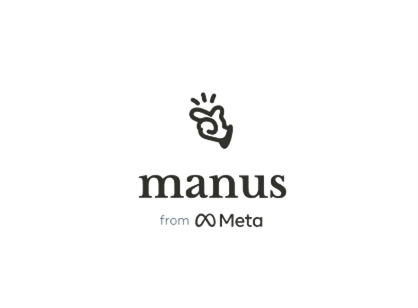
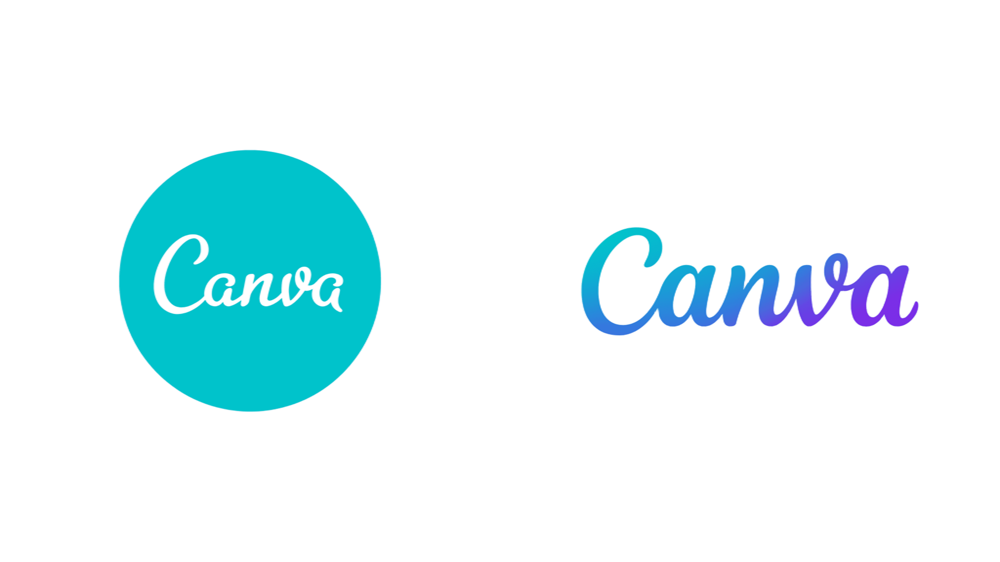
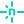

ABOUT รัฐไทยก้าวหน้า
รวบรวมข้อมูลภาครัฐไทย — กรม กระทรวง คณะรัฐมนตรี และผู้แทนราษฎร — มาไว้ในที่เดียว ในรูปแบบที่ดูง่าย เข้าใจง่าย และเปิดให้ทุกคนเข้าถึง
ทำไมต้อง
รัฐไทยก้าวหน้า
รัฐไทยก้าวหน้า เกิดขึ้นจาก โครงงานเว็บไซต์ ที่ตั้งใจรวบรวมข้อมูลของภาครัฐไทยซึ่งกระจัดกระจายอยู่หลายแหล่ง ให้มารวมกันในที่เดียว
ไม่ว่าจะเป็น กรม และ กระทรวง ต่าง ๆ โครงสร้างของหน่วยงานรัฐ คณะรัฐมนตรี ไปจนถึง ส.ส. ผู้แทนราษฎร และข้อมูลสถิติ เราจัดระเบียบมันใหม่ให้กลายเป็นเว็บที่ดูง่าย ค้นเร็ว และเข้าใจได้โดยไม่ต้องเป็นผู้เชี่ยวชาญ
เป้าหมายเรียบง่าย — ทำให้ข้อมูลรัฐ โปร่งใส เข้าถึงง่าย และน่าสนใจ สำหรับทุกคน
สำรวจชุดข้อมูล
แต่ละส่วนคือแดชบอร์ดของตัวเอง — คลิกเพื่อเปิดดูแบบเต็ม
แผนผังโครงสร้างรัฐ
ผังโครงสร้างหน่วยงานภาครัฐ กระทรวง กรม และองค์กรในสังกัด
เปิดดู → 02ส.ส. ผู้แทนราษฎร
ผู้แทนราษฎรรายเขตจากทั่วประเทศ พร้อมข้อมูลพรรคและพื้นที่
เปิดดู → 03ชุดคณะรัฐมนตรี
ทำเนียบคณะรัฐมนตรี รายชื่อรัฐมนตรีและกระทรวงที่รับผิดชอบ
เปิดดู → 04ข้อมูลสถิติ
แดชบอร์ดสถิติข้อมูลรัฐ ดึงจากแหล่งข้อมูลเปิดของภาครัฐและสากล
เปิดดู →ประวัติความเป็นมา
ผมเป็นคนที่ ชอบเรื่อง AI และเทคโนโลยีใหม่ ๆ ชอบทดลองลงมือ สร้างสรรค์สิ่งต่าง ๆ ด้วยตัวเอง ตั้งแต่การ สร้างภาพ ด้วย AI แต่งเพลง ไปจนถึงการ สร้างเว็บไซต์ — และเว็บ “รัฐไทยก้าวหน้า” นี้ก็คือหนึ่งในผลงานที่เกิดจากความชอบนั้น
เครื่องมือที่ใช้สร้างเว็บนี้
AI และเทคโนโลยีทั้งหมดที่อยู่เบื้องหลัง “รัฐไทยก้าวหน้า” — ตั้งแต่ช่วยคิด ช่วยเขียนโค้ด ไปจนถึงเผยแพร่ขึ้นออนไลน์
AI // เครื่องมือ AI ทั้งหมดที่ใช้ทำเว็บและโครงสร้าง


Manus
DEV // เทคโนโลยีที่ใช้ในการพัฒนาเว็บ
 HTML5
HTML5 CSS
CSS JavaScript
JavaScript Git
Git GitHub
GitHub GitHub Pages
GitHub Pages
Netlify Google Fonts
Google Fonts